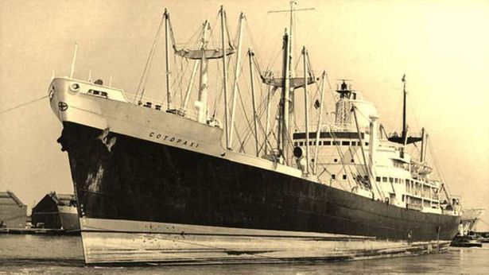
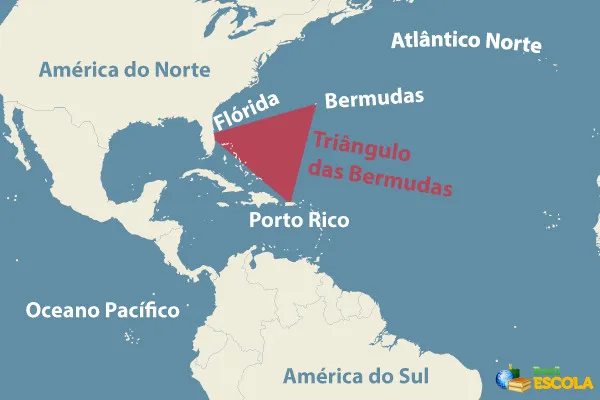
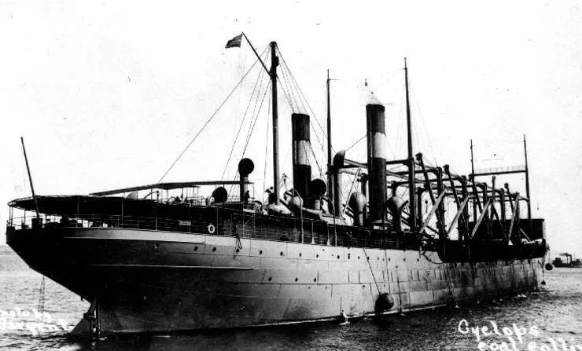

Triangulo das Bermudas
- O Triângulo das Bermudas é uma área do Oceano Atlântico que forma uma espécie de triângulo imaginário. Em suas pontas estariam a ilha de Bermudas, a cidade de San Juan (Porto Rico) e a cidade de Miami (Estados Unidos), conforme aponta o mapa acima. A região é muito conhecida pelos mistérios que a envolvem, sobretudo em virtude do comportamento supostamente anômalo de suas águas e do desaparecimento de aviões e embarcações em sua área.
- O mais antigo relato “sombrio” sobre o Triângulo das Bermudas foi feito por Cristóvão Colombo, que afirmava que a sua bússola apresentava um mau funcionamento no local, além de este ser muito perigoso e aparentemente emitir luzes embaixo do oceano
- No entanto, o caso que fez com que o local ganhasse maior notoriedade foi um acidente ocorrido em 1945, quando cinco aviões americanos misteriosamente sumiram, vitimando dezenas de tripulantes.
- Em 1951, um avião cargueiro, também pertencente aos Estados Unidos, desapareceu na região sem emitir nenhum sinal. Teoricamente, as condições de voo eram ideais e não houve uma explicação plausível para o sumiço repentino do avião, que levava consigo mais de cinquenta pessoas. Houve, posteriormente, outros casos de sumiços, naufrágios e mortes no local.
- Essas ocorrências instigaram o imaginário popular, fazendo com que autores de livros e a população como um todo passassem a elaborar teorias mirabolantes, como raptos praticados por extraterrestres, passagens para outro mundo, monstros aquáticos e muitas outras lendas.
- No meio científico, a teoria mais aceita para explicar os acidentes no Triângulo das Bermudas referia-se à existência de gás metano nas águas em virtude da formação de vulcões submersos nos oceanos, o que provocaria efeito sobre as águas e também na atmosfera, vitimando tanto os navios quanto os aviões que passassem pelo local.
- Já a explicação para o mau funcionamento das bússolas é mais conhecida, trata-se de um fenômeno conhecido como variação de bússola, em que o instrumento passa a apontar para o norte geográfico e não para o polo norte magnético. Esse fenômeno ocorre em outras localidades também e é de conhecimento comum entre aqueles que entendem de técnicas de navegação. Caso algum operador mais inexperiente utilize a bússola sem fazer as devidas correções, fatalmente se perderá, aumentando as chances de naufrágio

- A imagem acima mostra um navio que desapareceu a quase 100 anos atrás
- Recentemente, em 2010, uma equipe de pesquisadores australianos finalmente desvendou o “mistério” do triângulo das bermudas. E a explicação nada mais foi do que a comprovação da teoria do gás metano acima mencionada. Os solos do oceano liberam esse composto responsável por diminuir a capacidade de flutuação dos barcos, que, dependendo da concentração e do local, podem afundar repentinamente. Esse gás é também liberado em forma de bolhas na atmosfera, podendo reagir com faíscas liberadas pelo motor dos aviões, que correm o risco de explodirem, ou simplesmente provocar o desgaste dos motores
- Apesar dessa explicação, já havia outras hipóteses ligeiramente comprovadas que afirmavam que os acidentes eram casuais, ligados à falta de combustível, problemas técnicos e falhas humanas. Em alguns casos, as ocorrências nem chegaram a acontecer dentro do triângulo especificamente, mas em localidades relativamente próximas.
- É importante lembrar que todos os dias uma grande quantidade de aviões e embarcações passa pelo local e praticamente todas saem ilesas. A polêmica e os supostos mistérios só existem em virtude de acontecimentos aparentemente inexplicados e meramente ocasionais

- "Outro aspecto importante do Triângulo das Bermudas é a passagem da Corrente do Golfo. Essa corrente marítima é responsável pelo aquecimento de uma parcela das águas do Atlântico Norte e tem origem no Golfo do México. A presença dessa corrente está associada à ocorrência de furacões (ou tempestades tropicais), com maior incidência de pluviosidade e ventos fortes, e também à formação e intensificação de nevoeiro, que reduz a visibilidade tanto nos oceanos quanto no continente"
- "O Triângulo das Bermudas é chamado também de Triângulo do Diabo, o que se deve aos mistérios e lendas que se originaram depois dos acidentes e desaparecimentos com aeronaves e embarcações que ocorreram naquela região. A extensão de sua área não é um consenso na ciência. Enquanto alguns afirmam que a sua superfície é de 1.300.000 km², outros estimam uma área de 3.900.000 km². O único ponto em comum é, de fato, a sua localização"
lendas sobre o Triangulo

- "USS Cyclops em 1913, o navio que desapareceu no Triângulo das Bermudas com 300 pessoas a bordo e uma carga de 10 mil toneladas de manganês"
- "Um dos casos mais famosos é o do Voo 19. Cinco aviões Grumman TBF Avenger partiram da cidade de Fort Lauderdale (Flórida) às 14h10 do dia 5 de dezembro de 1945. Estavam a bordo das aeronaves 14 homens que partiram em uma missão de treinamento. Após cerca de 1h30 em atividade, o comandante reportou que estava perdido. A última transmissão aconteceu às 19h04, e, depois disso, os aviões e os 14 tripulantes desapareceram sem deixar vestígios"
- "O navio Mary Celeste foi encontrado em 4 de dezembro de 1872 à deriva no Atlântico, em meio à rota que fazia entre Nova Iorque e Gênova (Itália). Tudo no seu interior estava intacto, mas os tripulantes haviam desaparecido. Existem diversas teorias para esse caso, desde a ação de piratas na região do Triângulo das Bermudas até abdução alienígena"
- "Ao se aproximar do Triângulo das Bermudas, em 1881, a escuna Ellen Austin se deparou com uma embarcação à deriva. Desconfiado de que poderia ser uma armadilha, visto que não havia ninguém a bordo do navio, o capitão da Ellen Austin demandou uma observação cuidadosa de dois dias. Depois de terminado o prazo, o capitão enviou um pequeno grupo para o navio à deriva e decidiu levá-lo junto em sua viagem. No entanto, uma tempestade fez com que as embarcações se separassem. Quando a Ellen Austin avistou o segundo navio mais uma vez, a tripulação havia desaparecido"
- "Em 1918, um navio cargueiro da Marinha dos Estados Unidos desapareceu com 300 pessoas a bordo e uma carga de 10 mil toneladas de manganês. Apesar dos equipamentos disponíveis, o USS Cyclops nunca enviou pedido de socorro, e nada da embarcação foi encontrado. Mais tarde, em 1941, dois outros navios irmãos do Cyclops desapareceram sem deixar vestígios no mesmo local